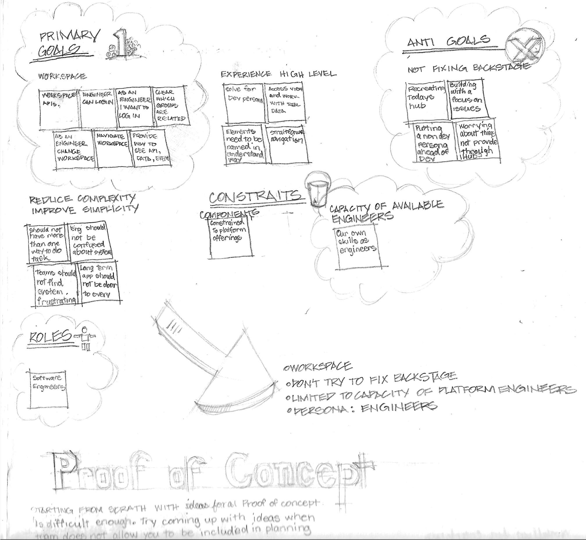
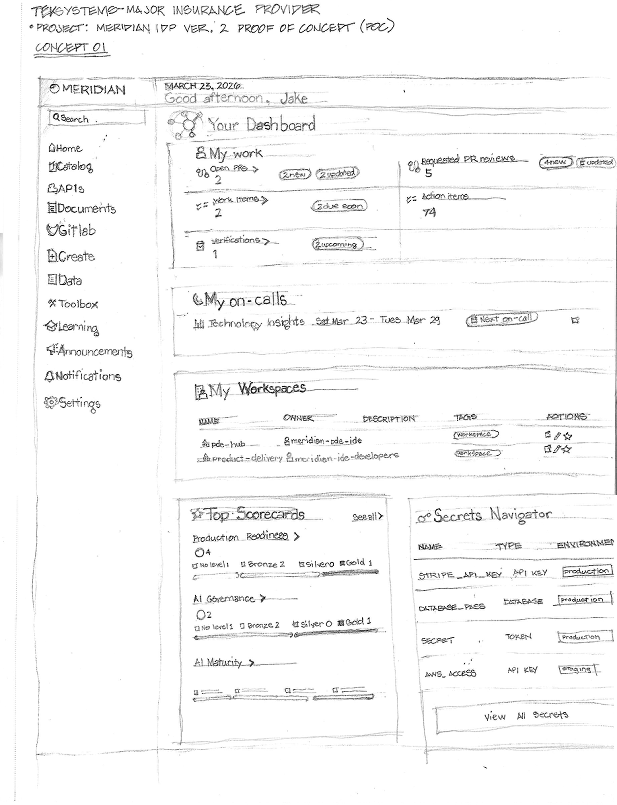
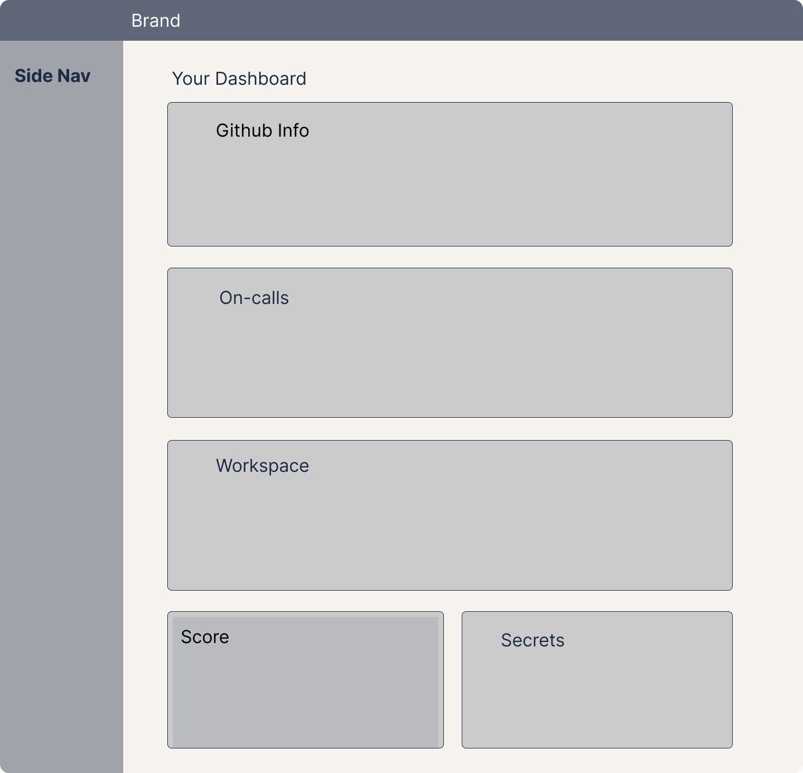
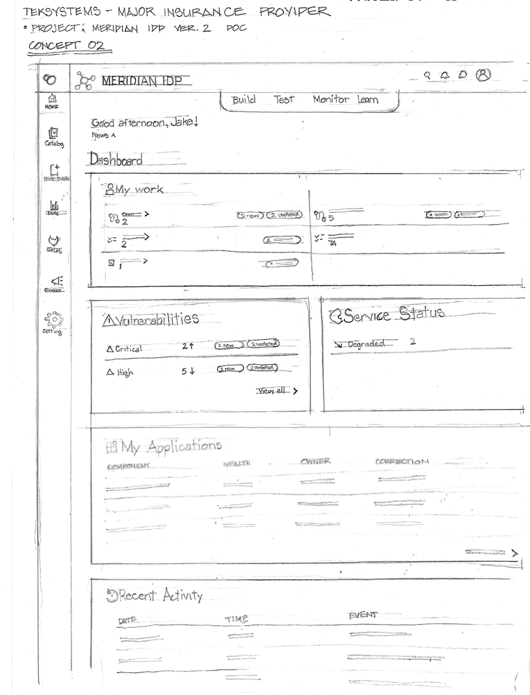
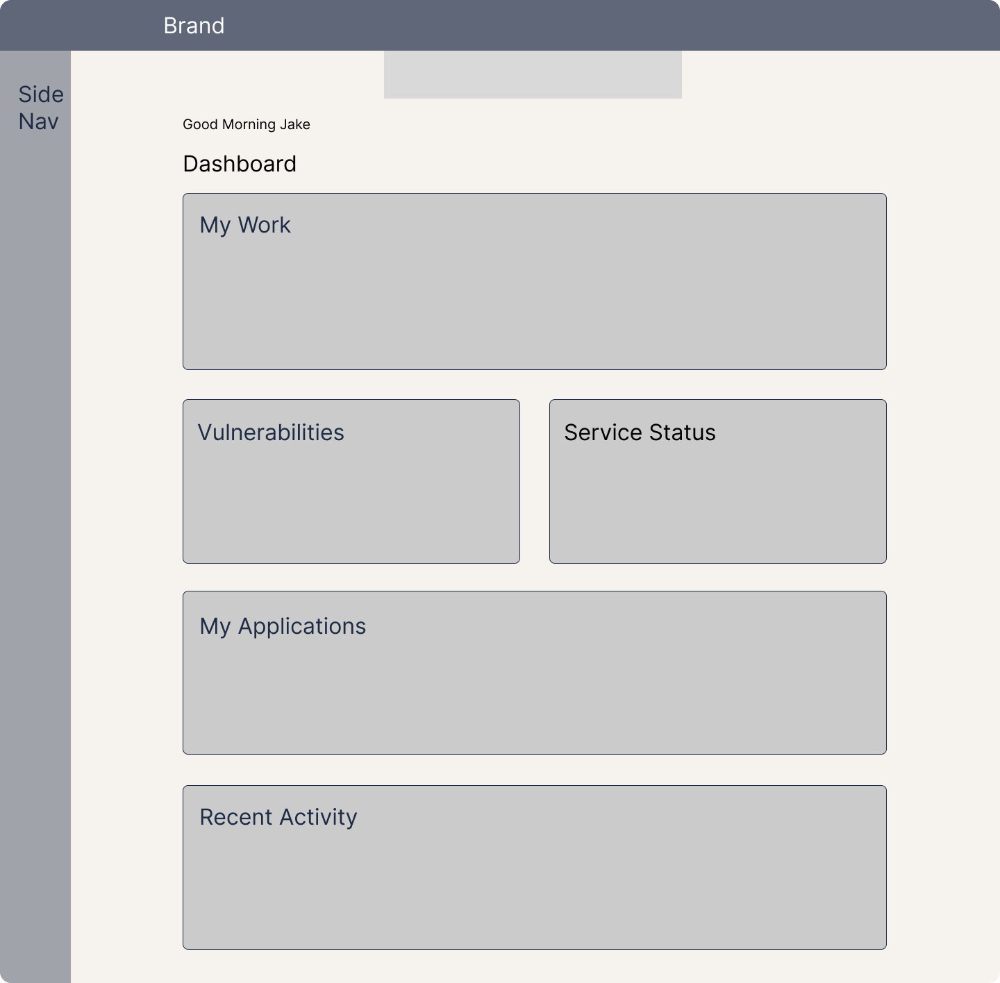
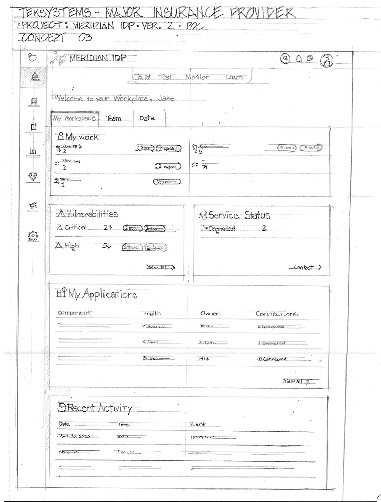
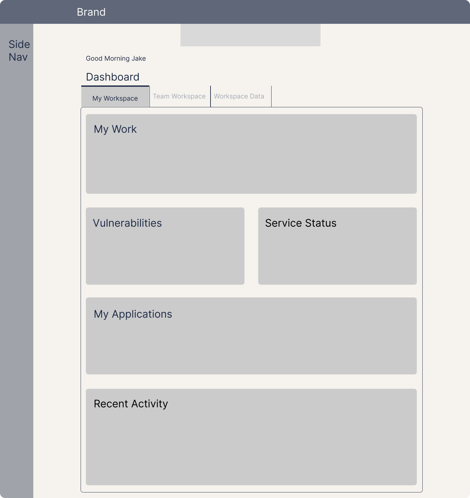

00 Overview
As the sole UX and Human Factors practitioner embedded on a seven-engineer platform team, I introduced a UX process where none existed — turning naturalistic observation, facilitated alignment, and formative evaluation into a proof of concept the team could rally behind.
Client work is documented under the fictional product name "Meridian IDP" to protect confidentiality. All findings, methods, and quotes trace directly to project source documents.
01 Problem or Purpose
A seven-engineer team could not align on the direction of a six-week proof of concept for their internal developer platform. No UX process existed on the team, and as a contractor I was initially excluded from team meetings. Engineers were navigating a hub that didn't reflect how they actually worked — their pull requests, on-call rotations, and owned workspaces lived scattered across GitLab, ServiceNow, and other tools.
The Human Factors problem underneath: the existing platform violated engineers' mental models of "my work." Before any interface could be designed, the team needed a shared, evidence-based definition of what the platform was for — and who it served. I proactively offered to facilitate that alignment.
"Nothing here is my work."
02 Users and Audience
Primary
Software Engineers
Confirmed as the sole target persona in the alignment workshop. High cognitive load, time-constrained, and deeply fluent in their own toolchain — they needed the platform to surface owned workspaces, services, APIs, and work items without adding a second way to do anything.
Secondary
Product Managers
A PM participated in formative evaluation alongside engineers. PMs facilitated the group feedback sessions where pain points were first observed, and cared about sprint-level visibility across the team's work.
Tertiary
Engineering Managers
Not a design target — but evaluation revealed their fingerprint. Engineers repeatedly noted that team-level views (metrics, ownership, sprint status) "would be useful to managers" more than to themselves, sharpening the persona boundary.
03 Roles and Responsibilities
Systems UX Design
Designed three low-fidelity homepage concepts in blueprint wireframe style, every element traceable to an observed pain point or workshop decision. Conducted competitive analysis of the Cortex IDP platform as a reference model.
Mixed-Methods Research
Naturalistic observation during PM-facilitated feedback sessions, two facilitated alignment workshops using affinity mapping and dot voting, expert heuristic evaluation against NN/g's 10 heuristics, and formative concept testing with five engineers.
Technical Liaison
Worked as the only non-engineer on a seven-engineer team. Translated engineering vocabulary — workspaces, secrets, scorecards, on-call rotations — into testable design questions, and research findings back into terms the team could build against.
04 Scope and Constraints
Project Scope
Hard Constraints
05 Process and What You Did
01
Naturalistic Observation
Excluded from team meetings as a contractor, I attended the PM-facilitated group feedback sessions I could access and captured engineer pain points verbatim. Twelve distinct pain points emerged — from open-vulnerability visibility to single-click secret creation — each mapped to a Human Factors category or Nielsen heuristic before any design work began.
02
Facilitated Alignment Workshops
Two affinity-mapping sessions with all seven engineers, using a structured synthesis sequence: generate, share, cluster, label, dot-vote, synthesize, capture. Because participants had no FigJam access, I transcribed every sticky note live while listening. Session two closed consensus on all seven framing questions — goals, users, anti-goals, risks, and the key decision: data requirements.

Alignment synthesis — primary goals, anti-goals ("not fixing Backstage"), constraints, and the single confirmed persona: engineers.
03
Competitive Analysis & Heuristic Evaluation
Analyzed the Cortex IDP platform as a reference model for feature patterns. Separately, conducted an expert heuristic evaluation of the existing hub homepage against NN/g's 10 heuristics — after first presenting the heuristics framework to the engineering team with real examples, so evaluation landed on educated ground. Findings were presented, validated by the team, and design iteration initiated.
04
Three Divergent Concepts
Each concept was sketched by hand first, then translated into a low-fidelity wireframe. Every card and control traces to a numbered pain point or workshop decision.
Concept 01 — Cortex-Informed Full Feature Set
Card-based dashboard retaining the existing left navigation. My Work, My On-calls, My Workspaces, Top Scorecards, and a Secrets Navigator — the widest feature surface of the three, informed by competitive analysis.
Sketch

Wireframe

Concept 02 — Pared-Down Navigation
Left navigation reduced from 11 items to 7 with named labels — a 36% reduction targeting cognitive load. Cards: My Work, Vulnerabilities, Service Status, My Applications, Recent Activity. Included a speculative Node Builder concept informed by cross-project insight.
Sketch

Wireframe

Concept 03 — Workspace-Centered Tabbed Interface
Three tabs: My Workspace, Team Workspace, and Workspace Data. The third tab was intentionally left empty as an elicitation device — inviting engineers to name their own data requirements rather than react to mine. Directly driven by the workshop's top-voted goal.
Sketch

Wireframe

05
Formative Evaluation
Concept testing with five engineers, recruited directly — I identified the most engaged, friction-aware participants from the feedback sessions rather than routing invitations through management. Each participant reviewed all three concepts via individual Figma prototype links on their own machines, answering the same six questions per concept: where they'd find their work, what was missing, what they'd never use, what tasks it would support, what they'd expect under "catalog," and whether the navigation felt fast.
06 Outcomes and Lessons Learned
12
Pain points captured
Through naturalistic observation, each mapped to a Human Factors category before design began
36%
Navigation reduction
Left-nav items cut from 11 to 7 in Concept 2 — a measurable cognitive-load decision
3
Concepts evaluated
Tested with five engineers using the same six questions per concept, captured in contemporaneous field notes
"Having it all in one place would work."
Where the evidence pointed
Preference across participants was split rather than unanimous. Concept 3's workspace-centered tabbed model drew the strongest support — engineers valued the team status view and early-warning signal — while Concept 2's simplicity was also praised, and engineers consistently noted that team-level metrics would serve managers more than themselves. The resulting direction blended Concept 3's workspace structure with Concept 2's pared-down navigation, and design iteration was initiated on that basis.
Key Takeaway
Exclusion is not a blocker — it's a research constraint. Denied meeting access as a contractor, I built the entire evidence base from the rooms I could enter: observation, facilitation, and direct recruitment. The empty Workspace Data tab proved that a deliberate absence can be a research instrument. And the sharpest finding of all cost nothing to collect: when an engineer says "nothing here is my work," the mental model — not the interface — is the problem to solve.